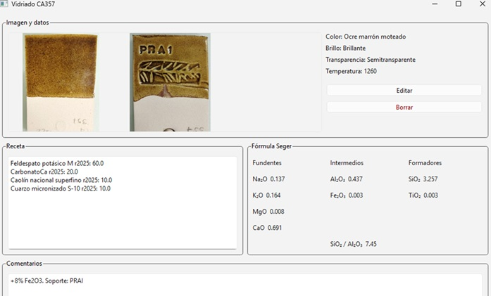

Ya hemos visto que la receta es el mínimo imprescindible para preparar un vidriado, sin embargo, desde un punto de vista teórico, lo que nos da más información es la fórmula Seger. La receta representa el vidriado en crudo, antes de la cocción, y la fórmula Seger representa el vidriado tal como lo vemos tras salir del horno.
Durante la cocción, las materias primas que figuran en la receta pierden su identidad y se descomponen en óxidos que, a su vez pueden componer otras sustancias y volver a descomponerse, según se va elevando la temperatura, pero la clave está en los óxidos. En teoría, la proporción en óxidos del vidriado cocido, expresada en moles, no en peso, que es lo que nos da la fórmula Seger, es bastante más útil para interpretar el vidriado que las propias materias primas.
Desde este punto de vista, las materias primas se pueden caracterizar por los óxidos que introducen en el vidriado y, los distintos óxidos tienen distintas funciones dentro del vidriado. En cuanto a su composición en óxidos, podemos describir la base de cualquier vidriado como:
SiO2 (sílice) + Al2O3 (alúmina) + Fundentes
Además, se pueden incorporar a esta base dos nuevos grupos de óxidos: opacificantes y colorantes. Así, el esquema general de la composición dl vidriado en función de sus óxidos constituyentes es:
SiO2 (sílice) + Al2O3 (alúmina) + Fundentes (+ opacificantes + colorantes), donde se han puesto los dos últimos grupos entre paréntesis porque no necesariamente van a aparecer en la composición del vidriado, mientras que los otros tres sí son necesarios.
La sílice es, en proporción y por la función que desempeña, la parte más importante del vidriado. Es el formador de vidriado. Es gracias a la sílice que podamos obtener vidrio.
La alúmina regula la viscosidad del vidriado. Las sustancias, cuando funden, en general, se vuelven bastante fluidas. Lo suficiente para escurrir paredes abajo por la pieza cerámica. Para evitar esto y que el vidriado permanezca en el mismo sitio en el que se aplicó, necesitamos alúmina.
Finalmente, los fundentes sirven para rebajar la temperatura de fusión al rango de temperaturas en que cuecen los hornos cerámicos, es decir, entre 1000º y 1300ºC, aproximadamente. Si no es por los fundentes, cualquier mezcla de sílice y alúmina no llegaría a fundir en un rango tan bajo de temperatura.
Luego quedan los colorantes y opacificantes, cuya función es evidente.
La fórmula Seger nos da la composición del vidriado desde este punto de vista de la mezcla de óxidos. Así, podemos fijarnos en la fórmula Seger de la siguiente imagen, sacada de la base de datos de vidriados.

Como vemos, hay 3.257 moles de sílice, que es un número mayor que la suma de los moles del resto de óxidos que componen el vidriado. También podríamos darnos cuenta de que la suma de los moles de la primera columna, formada solo por óxidos fundentes, es uno. Esto es una convención que hace más fácil de interpretar la fórmula. Es algo parecido a la costumbre de expresar las materias primas como un porcentaje. Otra cosa que es típica es que el colorante, un 8% de óxido de hierro rojo, no se ha incluido como parte de la fórmula, sino que figura en los comentarios. La pequeña cantidad de Fe2O3 que figura bajo la alúmina proviene de las impurezas de algunas materia primas, no se ha introducido específicamente como colorante. En general, cuando veamos números muy pequeños en los moles, siempre corresponden a impurezas.
Si comparamos las materias primas de la receta con los óxidos de la fórmula, no hay ninguna materia prima que aporte óxido de magnesio, óxido de titanio no óxido de hierro. Estos tres óxidos son impurezas.
Si relacionamos esta sección con la anterior sobre materias primas y recetas, podemos decir que las cuatro materias primas que figuran en la receta son:
Feldespato potásico, que aporta K y Na como fundentes más alúmina y sílice.
Carbonato de calcio, que aporta el fundente CaO
Caolin nacional superfino, que aporta alúmina y sílice, más una pequeña proporción de impurezas.
Cuarzo micronizado S-10, para aportar sílice.
En relación con lo dicho en la sección anterior, podemos añadir que el caolín, aunque es una arcilla, contiene muy pocas impurezas fundentes y, en ese sentido, no tiene todo lo que precisa un vidriado para formar el vidrio.